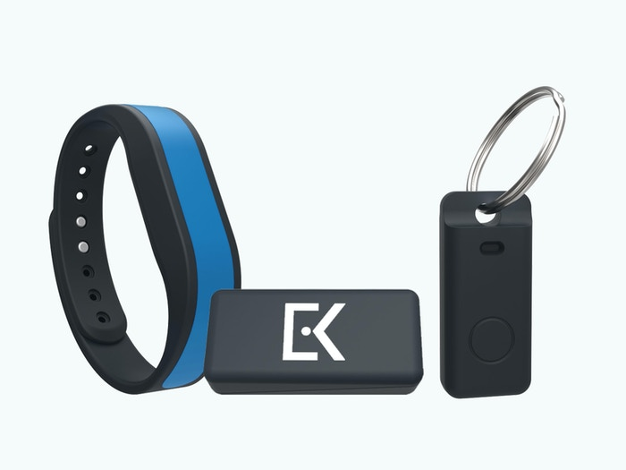

Everykey
Everykey - Plus de mots de passe, plus de clés.

Everykey est une clé pour:
-
Voitures
-
Portes
-
Cadenas
-
Cartes Bancaires
-
Domotique
-
Comptes Internet
-
etc...
Description d'EveryKey:
Everykey est un appareil Bluetooth qui remplace vos clés et mots de passe. En utilisant une sécurité de
niveau militaire, Everykey déverrouille votre téléphone, ordinateur portable, tablette, porte de maison,
portière de voiture et autres appareils à accès contrôlé lorsque vous êtes à proximité, puis les verrouille
lorsque vous vous éloignez. Everykey génère également des mots de passe sécurisés pour vos comptes de site
Web, puis vous connecte automatiquement lorsque vous visitez un site Web. Si vous perdez votre Everykey,
vous pouvez le geler à distance afin que personne d'autre ne puisse l'utiliser.
Fonctionnalités:
-
Verrouillage et déverrouillage automatiques
Lorsque votre Everykey est proche de l'un de vos appareils, vous pouvez y accéder sans mot de passe.
Lorsque vous vous éloignez, votre appareil se verrouille à nouveau.
-
Connexion automatique au site Web
Lorsque vous vous connectez pour la première fois à un site Web, votre Everykey se souvient de cette
connexion. La prochaine fois que vous visitez ce site Web, Everykey vous connecte automatiquement.
-
Génération de mot de passe sécurisé
Everykey peut générer des mots de passe sécurisés et aléatoires pour vos comptes de site Web, puis vous
connecter automatiquement la prochaine fois que vous visitez ces sites.
-
Accessoire Band

Cet accessoire portable transforme Everykey en une déclaration de mode élégante et élégante. Glissez
simplement votre Everykey dans la poche à l'arrière du bracelet et portez-le partout où vous allez.
-
Dongle Bluetooth

Si vous utilisez Everykey avec un ordinateur Windows qui n'est pas compatible Bluetooth Low Energy, tel
que Windows 7 ou Windows 8, ce dongle Bluetooth est requis pour la compatibilité Everykey. Il a été
spécifiquement sélectionné pour ses performances, sa fiabilité et ses fonctionnalités de sécurité.
-
Accessoire porte-clés

Un jour, Everykey remplacera toutes vos clés sur ce gros porte-clés encombrant. Jusqu'à ce jour,
utilisez l'accessoire porte-clés Everykey comme moyen pratique de transporter votre Everykey. Porte-clés
en métal non inclus.
-
Câble de chargement

Chargez rapidement votre Everykey depuis votre ordinateur avec ce câble de chargement USB 2.0 vers Micro
USB